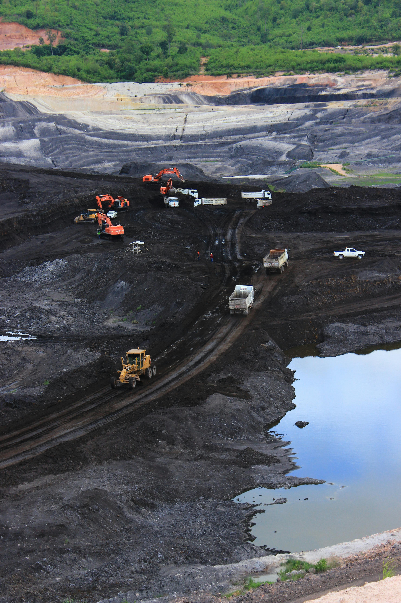

Integrated technical support across exploration, project development, strategic advisory, and acquisition-focused opportunity assessment.
Specialized geological and exploration support for mineral discovery and target generation
Detailed geological and structural mapping, field data collection, and lithological characterization for exploration targeting.
Strategic exploration target identification using geological, geochemical, and geophysical data integration.
Data interpretation, anomaly analysis, and integration with geological models for prospect evaluation.
Evidence-based drill target selection, geological rationale development, and target prioritization.
Drilling program planning, on-site geological supervision, core logging, and quality assurance.
Field sampling programs, quality control protocols, and exploration database management.
Technical evaluation and strategic support for mining project advancement
Independent technical review, geological assessment, and project feasibility evaluation for mining opportunities.
Technical input for resource estimation, geological modeling, and development-stage planning.
Strategic planning for mine development, operational optimization, and project advancement pathways.
Support for metallurgical testing programs and process flowsheet development coordination.
Geological and technical support during project development, permitting, and pre-feasibility stages.
Professional consulting, due diligence, strategic advisory, and project acquisition support for the mining sector
Independent technical review for investment decisions, acquisitions, and joint venture evaluations.
Third-party geological assessment, data validation, and technical reporting ( JORC & NI 43-101 ) for stakeholders.
Expert consultation on geological, exploration, and mining technical matters across project lifecycles.
Guidance on regulatory requirements, reporting standards, and compliance documentation.
Professional technical presentations, investor reporting, and stakeholder communication support.
Strategic advisory for mining business development, partnership opportunities, and market entry.
Eldora assists with identifying, screening, and evaluating high-potential projects for acquisition, combining technical due diligence, strategic fit assessment, commodity focus, and risk-based opportunity review.